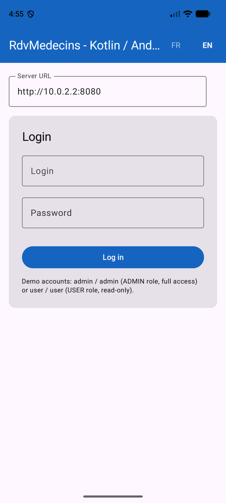

1. Introdução
O PDF do documento está |AQUI|.
O código deste documento está |AQUI|.
Este documento é um produto da IA Claude, da Anthropic. Seu objetivo é adaptar o documento “Um exemplo cliente/servidor - AngularJS 1.x / Spring 4” em duas frentes:
- o cliente AngularJS 1.x é substituído por um aplicativo Android nativo escrito em [Kotlin] com o uso de [Jetpack Compose];
- o framework web Java Spring MVC é substituído pelo framework web [NestJS];
Para isso, ele acompanha, capítulo por capítulo, o documento “Um exemplo cliente/servidor - Flutter / NestJS (2026)”: mesmo servidor, mesmo banco de dados, mesma arquitetura de cliente; apenas o framework do cliente muda, com o Flutter (Dart) sendo substituído pelo Jetpack Compose (Kotlin).
A IA Claude, da Anthropic, fez a maior parte do trabalho:
- geração do código: Claude gerou todo o código do cliente em Kotlin. Ele mesmo o compilou e o testou em um emulador Android no computador do revisor, com a permissão deste; as capturas de tela do emulador foram feitas durante esses testes;
- geração do curso em formato ODT: Claude gerou o documento, que o revisor leu com atenção e testou acompanhando-o passo a passo.
Nota 1: Se o principal objetivo do leitor é “aprender NestJS”, há uma introdução a esse framework web no documento Introdução à linguagem TypeScript e ao framework web NestJS por meio de exemplos. Neste documento, o servidor NestJS é tratado como uma caixa-preta. Explica-se como usá-lo, mas seu código não é descrito.
Nota 2: A linguagem de programação usada neste documento é [Kotlin]. Supõe-se que seus fundamentos (classes, data classes, nulabilidade, lambdas, funções de extensão, coleções etc.) já sejam conhecidos: eles são abordados no curso de Kotlin. Os conceitos específicos do Android ou do Jetpack Compose, assim como as corrotinas, são explicados ao longo do documento.
Nota 3: Claude faz referência com frequência ao cliente [Flutter] do curso “Um exemplo cliente/servidor - Flutter / NestJS” (2026), do qual este documento é uma adaptação, e, às vezes, aos clientes web Angular, React e Vue.js da mesma aplicação. Essas comparações ajudam os leitores familiarizados com um desses frameworks, mas conhecer qualquer um deles não é necessário para acompanhar este documento.
Nota 4: Se você achar que as explicações de Claude não são suficientes, envie uma solicitação a Claude pedindo esclarecimentos sobre um ponto específico do curso. Isso costuma ser útil.
Serge Tahé, outubro de 2026
==
Este documento é uma continuação do curso “Um exemplo cliente/servidor - AngularJS 1.x / Spring 4”, escrito em 2014. Esse documento original construía uma pequena aplicação de agendamento de consultas médicas (“[RdvMedecins]”) com um servidor Spring 4 / Spring Data / Spring MVC e um cliente AngularJS 1.x.
Doze anos depois, os dois frameworks utilizados evoluíram de forma significativa, ou até foram substituídos no uso corrente:
- no lado do servidor, o [NestJS] se consolidou como um dos frameworks Node.js/TypeScript mais usados para construir aplicações web estruturadas, com uma filosofia semelhante à do Spring (módulos, controllers, serviços, injeção de dependência);
- No lado do cliente, os aplicativos são cada vez mais acessados pelo celular. Este documento descreve, portanto, um aplicativo Android NATIVO: escrito em [Kotlin], a linguagem recomendada pelo Google para Android desde 2019, e com uma interface descrita por meio do [Jetpack Compose], a biblioteca declarativa de interface do Android (estável desde 2021), que substitui o antigo sistema de views descrito em XML.
O objetivo deste documento é revisitar o estudo de caso original (o mesmo aplicativo, as mesmas funcionalidades, o mesmo banco de dados) e reconstruí-lo com as ferramentas atuais, mantendo o máximo possível da mesma progressão didática do documento de 2014 e de sua variante Flutter de 2026.
1.1. Uma reconstrução passo a passo
O documento original tinha cerca de 300 páginas e abordava, além das funcionalidades centrais da aplicação (autenticação baseada em papéis com Spring Security), doze exemplos progressivos para aprender AngularJS 1.x passo a passo. Assim como a variante Flutter, este documento aborda:
- a arquitetura geral da aplicação (inalterada em princípio);
- o banco de dados (inalterado, exceto pela adição da tabela [users]);
- a instalação do servidor [NestJS] completo, cujas funcionalidades de visualização de consultas e de agendamento/cancelamento são testadas com o Postman; seu código não é abordado aqui;
- a autenticação baseada em token (JWT) e o controle de acesso baseado em papéis (ADMIN/USER) desse servidor; aprenderemos apenas a usá-los, primeiro por meio do Postman e depois pelo cliente;
- o cliente Android correspondente, com as mesmas funcionalidades, uma tela de login, uma interface adaptada ao papel do usuário conectado (Material Design 3) e a possibilidade de alternar a interface entre francês e inglês ([TranslationsService]).
Duas funcionalidades do documento original foram omitidas deste documento, como na versão Flutter: o modo “debug” do cliente original, deixado de fora deliberadamente (veja o Capítulo 6), e a configuração de um atraso de rede artificial, adiada para uma etapa posterior.
1.2. A quem se destina este documento
Este documento não pressupõe nenhum conhecimento prévio de Android, Jetpack Compose ou [NestJS]. Cada novo conceito (activity, função @Composable, estado, ViewModel, corrotina, interceptor HTTP etc.) é explicado à medida que aparece. Ainda assim, alguns conhecimentos básicos são úteis:
- um conhecimento básico da linguagem Kotlin (veja o curso de Kotlin);
- um conhecimento básico das trocas HTTP (métodos GET/POST, formato JSON);
- experiência com o uso da linha de comando (cd, npm install...).
Conhecer Flutter não é necessário: as numerosas comparações com o cliente Flutter se destinam aos leitores que fizeram esse curso, mas cada conceito é primeiro explicado por si só.
1.3. A arquitetura da aplicação
A arquitetura geral da aplicação não mudou desde o documento original:
- o cliente apresenta ao usuário uma única interface, construída sobre o modelo de componentes (view + lógica associada), que se apoia em serviços para se comunicar com o servidor; neste caso, um aplicativo Android executado no sistema do celular;
- o usuário interage com as telas do aplicativo. As ações do usuário às vezes exigem o envio de uma requisição ao servidor [NestJS], que processa a requisição e devolve uma resposta JSON; essa resposta é usada para atualizar a tela exibida ao usuário.
A aplicação em estudo terá a seguinte arquitetura:

- Em [1], o usuário do aplicativo Android consulta a camada [Presentation] [2] da aplicação;
- para executar a ação solicitada pelo usuário, a camada [Presentation] [2] pode consultar a camada [Services] [3];
- Para fornecer o serviço solicitado, a camada [3] pode precisar consultar [4], o servidor JSON remoto implementado pelo [NestJS];
- Dependendo da requisição recebida em [5], as camadas [6-8] podem ser consultadas;
- a resposta do servidor percorre as camadas [2-8] na ordem inversa;
- a tela exibida ao usuário ([1]) reflete essa resposta.
Nota: Se você se confundir com a arquitetura do projeto, volte a este diagrama. Observe que o SGBD é gerenciado pelo servidor, não pelo cliente.
1.4. Ferramentas utilizadas
Este documento usa as seguintes ferramentas (sua instalação é detalhada nos Capítulos 1 e 2):
- Node.js (versão 22 ou posterior) e npm, para executar o servidor [NestJS];
- [Android Studio], o ambiente de desenvolvimento do Google para Android. Ele fornece tudo de que o cliente precisa: o editor de código (baseado no IntelliJ IDEA), o Android SDK, um JDK (o JetBrains Runtime), o emulador Android e a ferramenta de build [Gradle]. Diferentemente do curso de Flutter, em que o Android Studio era usado apenas para instalar o Android SDK, aqui ele serve como editor do cliente;
- Visual Studio Code (ou qualquer outro editor) para o servidor NestJS, se você quiser ver seu código;
- [MySQL] 8 para o banco de dados, instalado com o Laragon;
- Postman (ou qualquer outro cliente HTTP) para testar as URLs do servidor;
- um celular Android (opcional): um emulador é suficiente para acompanhar todo este documento.
1.5. Funcionalidades da aplicação
As funcionalidades “de negócio” do aplicativo [RdvMedecins] são as mesmas das versões anteriores:
- Um consultório médico emprega vários médicos, cada um com seus próprios horários de consulta;
- o usuário precisa fazer login (nome de usuário/senha) para acessar o aplicativo;
- Depois de conectado, o usuário pode selecionar um médico e um dia e ver a agenda do médico nesse dia: cada horário aparece como disponível ou reservado;
- um usuário com o papel ADMIN também pode reservar um horário disponível para um paciente à sua escolha e cancelar uma consulta existente;
- Um usuário com o papel USER pode ver as agendas, mas não pode reservar nem cancelar consultas (acesso somente leitura).


Acima, o aplicativo no emulador Android: a tela de login, em seguida a agenda de um médico e, depois, a tela após a reserva de um horário.
1.6. O que mudou e o que não mudou
Documento original (2014) | Variante Flutter (2026) | Este documento (2026) | |
MySQL 5 | MySQL 8, mesmas tabelas | idêntico à variante Flutter | |
Java, Spring 4 | TypeScript, NestJS | mesmo servidor NestJS | |
JavaScript, AngularJS 1.x | Dart, Flutter (mobile, desktop, web) | Kotlin, Jetpack Compose (Android) | |
navegador | código nativo compilado pelo Flutter | máquina virtual Android (ART) | |
Bower | Flutter / Pub | Gradle | |
Spring Security, HTTP Basic | Passport/JWT | Passport/JWT (mesmo servidor) | |
angular-translate | TranslationsService (feito à mão) | TranslationsService (feito à mão, mesmos dicionários) |
1.7. Organização deste documento
- Capítulo 1 - Configuração do ambiente de trabalho: instalar o Android Studio e o Android SDK, abrir o projeto do cliente, criar um emulador e configurar um celular.
- Capítulo 2 - Instalação do servidor [NestJS]: instalar o Laragon e o banco de dados MySQL, configurar, iniciar e testar o servidor e, em seguida, executar o cliente pela primeira vez.
- Capítulo 3 - Introdução ao Android e ao Jetpack Compose: activities, funções @Composable, estado e recomposição, CompositionLocal, corrotinas, ciclo de vida e ViewModel, com o equivalente em Flutter indicado para cada um.
- Capítulo 4 - O cliente Kotlin do aplicativo [RdvMedecins]: a arquitetura do cliente, cada um de seus arquivos e um passo a passo do aplicativo completo.
- Capítulo 5 - Execução do aplicativo: emulador, celular, APK e o que você precisa saber sobre rede, tráfego HTTP não criptografado, rotação de tela e telas estreitas; por fim, o que seria necessário para também ter como alvo o iOS, o desktop e a web.
- Capítulo 6 - Conclusão e próximos passos.